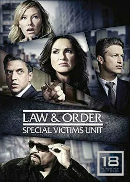

The genetics
The episode puts genetic determinism on trial. The rapists invoke a 'rape gene' as an excuse, turning heredity into a defence strategy and a self-serving belief shared within their group. Benson's brief fear for her son, whose biological father was a rapist but who is being raised by her, brings the question of heredity against upbringing home. The episode gives weight to both, but on responsibility it is clear: it treats the gene claim as an excuse and the men as predators hiding behind biology. In reality there is no 'rape gene'. A 2015 study did find that sexual offending clusters in families, partly for genetic reasons, but its authors stressed that they had not found a gene for sexual offending and that offending was not inevitable for relatives; genes can raise the probability of such behaviour, while upbringing, treatment and choice remain decisive. The available sources do not describe how the case is resolved.
How genetics is portrayed
- Overall portrayal of genetics
- negative Genetic determinism is embodied by the antagonists, rapists who invoke a 'rape gene' to excuse their assaults and treat them as destiny; the episode presents the claim as a predator's excuse, and it also brings Benson to fear for her son because of his biological father.
- Outcome of the genetic intervention
- not applicable No genetic test or work is described; the 'rape gene' is only claimed by the offenders and their 'support group'.
The story
A woman tells the Special Victims Unit that she has been raped, and when the detectives arrest her attacker he claims that he carries a 'rape gene' and cannot help himself because he was born that way. The case leads the team to a so-called support group of men who believe they carry the same gene and treat their assaults as destiny. A man who confesses to raping a bartender in her car offers to lead the police to a serial rapist they have been hunting in exchange for a lighter sentence; both men had described their assaults in the group's meetings. The genetic defence causes extreme tension in the squad room and with the district attorney's office, and it makes Lieutenant Olivia Benson think of her own father and of her son Noah's biological father, both rapists, and worry briefly whether Noah might follow in his footsteps.